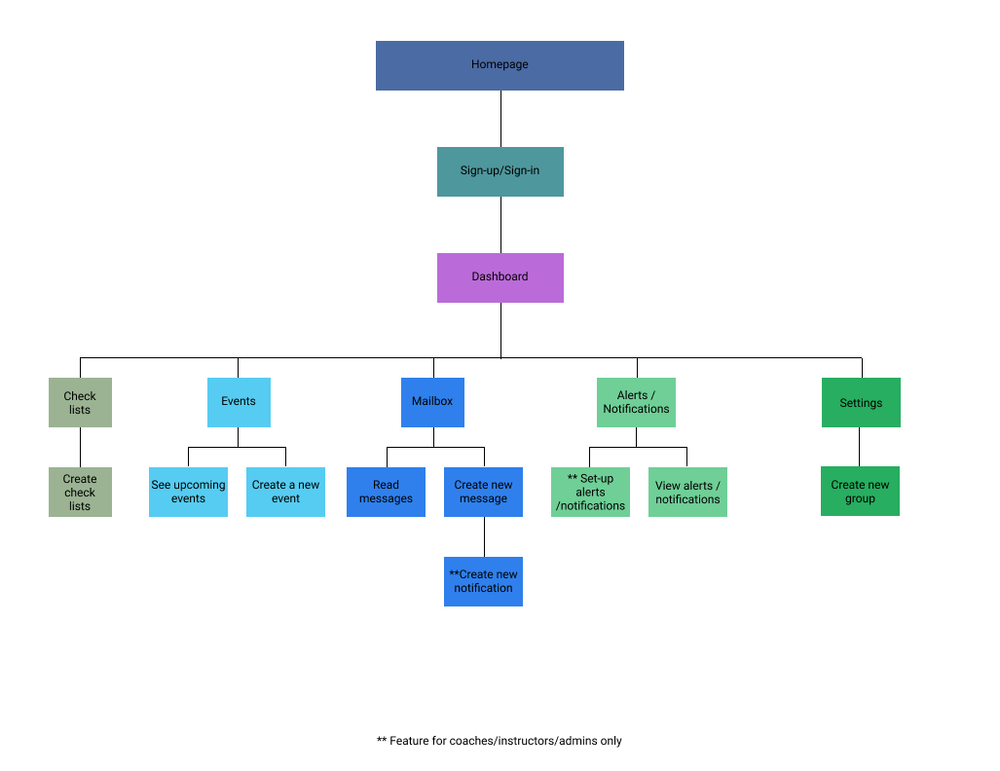

REVOLUTIONIZE THE WAY PARENTS AND INSTRUCTORS COMMUNICATE
INTRO
This is the story of how the mother of a dancer (me!) decided to find a solution to all the information she was getting from her daughter’s dance studio. The mother, who also happens to be a UX designer, came up with an idea that would simplify the way information is passed to parents and organize it so parents can save time and lower their stress level.
ROLES
- Research
- UX/UI Design
- Information Architecture
- Visual Design
- User Testing
- Prototyping
DELIVERABLES
- User Flows
- Wireframes
- Hi-fi Mockups
- Branding
- Style Guide
TOOLS
- Figma
- Sketch
- InVision
- Usability Hub
- DURATION
- One month
THE PROBLEM
Dance studios, sports teams, and other frameworks for kids’ activities communicate with parents in an archaic way, mostly via emails and printed letters. Parents struggle to keep track of all this information and sometimes forget important details about their children’s activities. Often, parents have more than one child in multiple activities and keeping track of all the information that comes from the various coaches, instructors, and teachers, becomes very challenging.
THE SOLUTION
Macrame is an app that helps parents and administrators in various kids' activities, communicate better, organize the information, get reminders before important events and keep all the information in one place.
THE PROCESS
In this project, I was tasked with creating a solution to a problem that I got to choose. I took a look at my life and the things that I would like to find solutions for. The most pressing issue at the time was finding a way to simplify the way parents communicate with their children’s coaches/instructors/teachers and finding a way to organize and keep all the info parents get into one place. I got excited about the idea. I talked to other parents and discovered that many of us struggle to keep track of all the info, which results in higher levels of stress around the times when our children have special events.
My role in this project was to do the research, develop and design a solution to these problems. The timeline for this project was very short, so I created a plan with strict deadlines for each phase of the design process.
RESEARCH & DISCOVERY
SURVEY
To make sure that I’m not trying to solve problems that are not really there, I created a survey.
The goals of the research were to determine the following:
1. How do most parents receive info from their kids’ coaches/instructors? Do parents receive a lot of information and are they struggling to keep track of all that info?
2. What kind of info do parents need to remember and how do they arrange all that info currently?
3. What features would the users like to have?
4. What is the target market?
SURVEY FINDINGS

- Parents receive a lot of information in an archaic way (email) and they struggle to keep track of it all.

- Remember dates of events, equipment/gear, what to wear?

- To remember parents set reminders on phones, save emails, make lists.
- Target market: women, ages 36-45
- Desired features:
- Reminders before events
- All details in one place
- Share info with others
I was surprised to find out that coaches/instructors are still sending info to parents via email and printed letters. I was also humored that I wasn’t the only one struggling to keep track of all the info and forget important details. I was intrigued by the fact that over 90% of the respondents were women. Was it a reflection of the mothers’ involvement in their children’s activities versus the fathers?
Based on the survey findings, I created 3 personas and user stories. You can read about the personas below.
COMPETITIVE ANALYSIS
I compared 3 different apps that are meant to help people organize their life:
See the complete competitive analysis
| macrame | Cozi | FamilyWall | 24me | |
|---|---|---|---|---|
| Schedule in one place | ||||
| Connect to calendar | ||||
| Variety of features | ||||
| Ability to share info |
There is an opportunity to market my product to parents with children in extracurricular activities. None of the apps I researched target this market. They are not aimed at improving the communication between coaches/instructors and parents and organize information.
This product is unique in that it’s meant to work with the user’s existing calendar on their phone. The apps I researched have their own calendars and they import the info from the users’ phones. This app sends the info to the user’s calendar.
STRATEGY
PERSONAS
Based on the survey results, I created personas, user stories, and user flows.
The three personas I created are all women with children in extracurricular activities. They are based on people who answered followup questions after the survey. They reflect the important things that the users want in the app:
- Save time by having all the info in one place
- Get alerts when there are changes in the schedule
- See everything in one calendar
- Knowing the times and special events
Simply put, their needs are to have less stress regarding their kids’ activities.

USER FLOWS
Based on these features and researching the user flows of other apps, I created user flows.
Creating & Sharing a New Event


Important note: From the onset of this project, I wanted to make sure that I stayed within the scope and develop a product that will solve the problem, but will only have the features needed for the MVP.
INFORMATION ARCHITECTURE
SITE MAP & CONTENT STRATEGY
I created a sitemap to establish the scope of the project. I was doing my best to keep the project small and limit the number of features for the MVP. As I was creating the site map, I looked back at the user flows to make sure that I’m following the structure I established. Later, I referred back to the site map as I was designing the wireframes. This was very helpful in keeping the wireframes organized.
Site Map
Some of the challenges I encountered while creating the sitemap, were having to decide on which page to put the different features of the app and how they would look (icon, words, hamburger menu). Furthermore, while creating the wireframe sketches, I was trying to think of the best way for the page layout. To solve this challenge, I looked at the competitors' designs and on Dribbble, I got inspired and came up with designs that I believed would work well.
At this point, I also wrote the content strategy.
LOW-FIDELITY WIREFRAMES
I started hand-sketching a few wireframes for the landing page and the dashboard.
Dashboard Sketches

Some of the questions that came up during this phase were:
1. How can I write the content before I decide which design to go with?
2. What’s the best way to word things so the user understands what this product is and why they should use it?
3. Is it enough to give the users the option of creating groups?
Originally, I thought it would be good to have two separate features: create a group and add family members to the account. At that point, I hadn’t made a decision and decided to test it with users first.
Next, I started designing all the wireframes in Figma. As I was working through this phase, I kept asking myself, how can I make this better and more efficient? How can I save steps for the users?
The most challenging part was getting started. I needed to get some inspiration. I went to Dribbble and looked at a lot of ideas, found the ones that I liked and implemented them into my designs. I was very drawn to card-style designs with rounded edges.
Events Page Lo-Fi Wireframe
At this point, I also refined the written content to better engage the users.
CLICKABLE PROTOTYPE I
I did some user testing with 3 moms to test a few basic tasks:
1. Creating an account
2. Checking messages
3. Writing a new message
4. Adding an event
5. Creating a list of things that they need to bring to an event
Most of the testers completed the tasks quickly and easily. I think the reason most of the tasks went so smoothly is that I kept the items on the pages minimal to avoid distractions.
Special notes:
One user said she wanted the system to auto-save her event so she wouldn’t have to do that extra step. The rest of the testers didn’t mention that and clicked on the save button. I decided to keep the button where it is. When I develop this, I would have the system auto-save everything.
When asked to create a list, one of the testers went to Events and looked for a place where she could create a list.
One tester liked the fact that she can view the map on an event.
One tester wasn’t sure if she was done signing up for an account.
One tester said it was just like her calendar when she was creating an event.
One said she loved the checklist feature.
I asked the users if they think there’s something unnecessary in the app and they all said no. I also asked if adding a family member to the account is needed, one tester said that it would be good, but also having the option to share individual items from the app is enough. She also mentioned having dates on the lists. I also noticed that none of the testers saw the Next Event section that was on the Dashboard. Later, I decided to remove it from the Dashboard, to eliminate clutter.
I did more testing once the hi-fi mockups were finished.
VISUAL DESIGN
DEVELOPING A BRAND IDENTITY
This part of the design process is one of my favorites. It was time to create a logo, decide on a color palette and typography.
I started to brainstorm and wrote down all the words that came to mind about kids’ activities.
The feelings that I wanted to convey through the brand were freshness, reliability, and simplicity.
Mindmap
THE NAME
I already had an idea for the name that I wanted to give the app, Macrame.
The concept behind the name is that we have all these loose strings and this app helps us weave them all together into a beautiful and useful outcome. In the same way, all the information we get from the various coaches and instructors are like loose strings, and the app brings it all together into one place where we can conveniently find everything we need to know and remember.
I ran my idea by my mentor, a senior designer, and she agreed that the name is strong conceptually. I decided to run with it.
THE LOGO
Having a name helped me to find a direction for the logo mark. I started by sketching a few ideas, using imagery that I found online of Macrame.
First Sketches

Next, I took the ideas and designed them in Figma.

I asked the design community for feedback and saw that the most liked design was no. 2. I took it and refined it.
FINAL LOGO

TYPOGRAPHY
Deciding on the typography took a lot of trial and error. I compiled a few combinations of font pairing and tried them in my designs. My favorite font pairing was Poppins and Ubuntu.
I picked Ubuntu for the logo because it has a different flair to it but is still easy to read. I also decided to use it for the titles. My other option for the logo typeface was Poppins. I consulted with a few designers and they said that they liked Ubuntu better. Another reason I ended up using Ubuntu is that the shape of the “m” in macrame resembles the angles in the logo mark. Together, they create a simple and modern look that goes well with the brand identity.
I realized that the combination of Poppins and Ubuntu didn’t look very good together, so I decided to replace Poppins with Open Sans. That still did not provide enough contrast, so in the end, I settled on using Ubuntu all over the project in different weights and sizes.
COLOR SCHEME
I tried two different color schemes and consulted with senior designers about the direction I should take. One of the color schemes had pink, blue and purple and the second had teal, blue and orange.
Option 1
Option 2
The advice I received was that the second color scheme works better for both girls and boys. I also felt that the second color scheme conveyed the feelings that I wanted the brand to carry.
View Style Guide
HI-FIDELITY MOCKUPS
It was time to design the mockups based on the main screens in my project.
A few of the questions that came up at this stage:
1. What type of icons should I use? Flat, colorful, outlines, thick or thin?
2. What color and style should the CTA buttons be?
Some of the challenges that came up:
1. I still felt that I lacked a concrete direction, so I looked at Dribbble for more inspiration.
2. I knew that I wanted to incorporate gradients, but how to do it in a way that won’t be too overpowering?
3. Deciding on styles for the icons. I decided to experiment with a style that I haven’t used before, flat, colored icons.
Overall Style
Initially, I was going for a style that had the information organized in cards. I received some feedback from senior designers to make my design more minimalistic, and that meant letting go of the card design. I’m glad that they encouraged me to try something different because it pushed me to explore other options that might look better. Although I really wanted to go in the card-style direction, the other style I tried out proved to be more elegant. I let go of my original plan and proceeded with the new style.
Events Page—Card Style
Events Page—Final Iteration
In this stage I had several rounds of iterations to refine the overall design, adhering to Material Design guidelines as I was creating this app for Android, and making sure all the components were present for smooth user experience.
I finished designing all the screens that were needed for user testing.
PROTOTYPING & USER TESTING
Once all the screens were designed, I created a prototype in InVision. I tested the prototype with 3 people who are within my target market, mothers who have children in sports and dance.
As I was creating the prototype, I noticed a few more details that I have overlooked when I was designing the mockups, such as adding a calendar that links to the dashboard and adding a side drawer to the menu on the dashboard.
Some of the questions that came up were:
1. What would be the most efficient way to structure the prototype? For example, from some of the screens, should I link back to the last screen visited, or to the Dashboard? I tested the 2 options myself and decided to link most of the screens to the Dashboard.
2. Another thing that came up is that some of the screens that I designed were not essential to the flow of some of the tasks, so I decided not to use them (setting a reminder on an event and adding a family member).
3. Should I design more screens for some of the tasks?
4. Is it necessary to add a family member, or is it enough to create a group?
As time was short and I had to remain within the scope of the project, I decided to eliminate anything that wasn’t essential for the MVP.
I enjoyed testing the prototype. It gave me a chance to connect with the people who would use the app, understand how they think and improve my design according to their needs. You can see the notes from the testing here.
The objectives of the testing were:
1. Find out if the main features of the app are easy to use.
2. Make sure the onboarding process is quick and easy.
3. Test with people who are within my target market.
The tasks that I asked the users to do:
- Sign up for an account
- Check messages
- Write a new message
- Create an event and share it with a group/contact
- Create a list of things you need to remember to bring to an event
- Check notifications
- Create a group (instructors only)
INSIGHTS
- The homepage seems to be communicating the right message about the app.
- The onboarding process is quick, easy and painless.
- The Dashboard is easy to use and shows the users where all the main things are. Navigating back to the Dashboard is also working well.
- Some of the users tried to click the + button on the Dashboard but nothing happened.
- Finding where to write a message was easy for almost everyone.
- Creating an event was easy for most of the users, as well as sharing it.
- Creating a checklist was easy for all users. They liked the fact that it can be shared too.
- Checking the notifications was a bit harder. The icon needs to be more prominent!
- Creating a group needs to be placed in a more noticeable place.
- Adding a family member was not necessary, so I removed this option.
First Iteration - Dashboard

One of the main iterations I made was in the process of filing items into folders. At first I had a process that required more clicks, but later I came up with a solution of combining the steps, for better user experience, as shown here:
Filing System Iteration

CLICKABLE PROTOTYPE II
Now that I had the hi-fi mockups it was time to test them, using InVision’s prototyping tool.
The tasks that I asked the users to do:
- Sign-up for an account
- Add a piece of content
- Organize a piece of content
- Share something with your friends on the newsfeed
- Log something you ate or an activity
INSIGHTS
- The onboarding process was easy and quick. The users liked that and also liked the fact that it’s a free service.
- Some of the users completed the second task successfully but the location of the folders confused them.
- The task of organizing a piece of content was difficult for all the users. The process needed to improve.
- All the users completed the forth task quickly and easily.
- All the users completed the 5th task quickly and easily.
IMPROVEMENTS
In the next round of iterations, I:
Changed the placement of the folders on My Cloud page and change their size so they are not the main thing on the page.


Added one more screen in the account settings that tells the users that the process is finished, and added a link to the Dashboard.
I also asked the users about the branding of RE:fresh. I was pleased to hear that the emotions and image I was trying to convey were successful!
FINISHING TOUCHES
Following the user testing, I was ready to make the final changes and put the finishing touches to the project. I went through all the screens and made the improvements that were needed, as well as upgrading a few other visual design elements.
View PrototypeI WASN'T QUITE DONE YET
Well, I thought I was done, but after receiving feedback on my visual design I decided to upgrade my design even more.
Anywhere there was a potential color contrast and readability issues, I changed the colors to create better visual hierarchy.
Improvements to Homepage
Nav bar was changed to being at the top of the image & logo changed to white.
Border was removed from CTA buttons.
Combined 2 sections into one and added more visual interest and consistency in the stroke of the icons.

Improvements to Dashboard
Made the dashboard more informationally dense, and more complex by adding more features.
Added a “quick add” button, which opens another screen upon clicking.

Color Throughout
Having the light teal text caused some color contrast issues as well as having the grey text over light blue background.
I flipped the prioritization - making the nav bar dark green with white text to increase the contrast. Also changed the background color to a lighter blue, so the text would be more readable.

FINAL THOUGHTS
Thank you for reading this far!
I created a cloud storage app for health & fitness enthusiasts. I expanded the options of what the users can do on it and I believe I was successful at doing that.
There are a few things that I would do differently or better if I had more time:
1. Improve the folders section and make the filing process easier
2. I would add more features
What I learned about myself
This was a very big project and I enjoyed working on it. I learned that I love to design and get lost in the process. The research and discovery phase was also very interesting and I learned that there are many opportunities in the cloud storage market, but you do have to work hard to create a product that would stand out.
Things that I need to improve:
1. Being more organized, since it’s key to staying within the timeframe.
2. I thought I was good at paying attention to details. But this took it to the next level. That is crucial for producing a professional product.